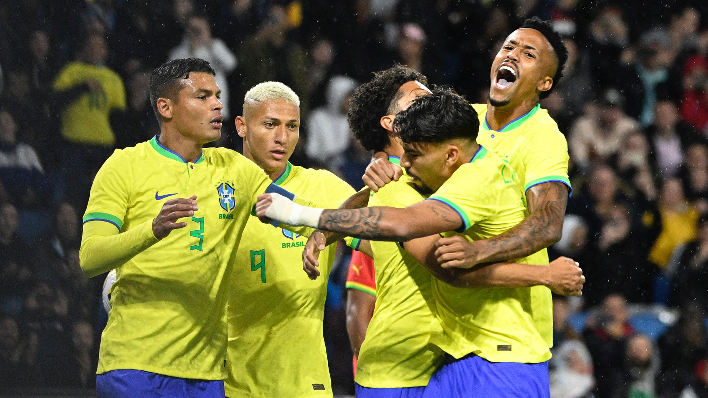

Copa do mundo.
Ola vamos convensar sobre a copa do mundo de 2022?Varios time jogando esse ano mais o brasil sempre se destaca
Brasil se destacou nessa copa foi um sofrimento para os brasileiro
Brasil
]
nas quartas, jogou bastante para nas quartas perderem, os brasileiros ficaram muito triste por isso.
Quantas Copas do Mundo o Brasil já participou?
São cinco títulos mundiais (1958, 1962, 1970, 1994 e 2002), dois vice-campeonatos (1950 e 1998), dois terceiros lugares (1938 e 1978) e dois quartos lugares (1974 e 2014) em 20 participações.